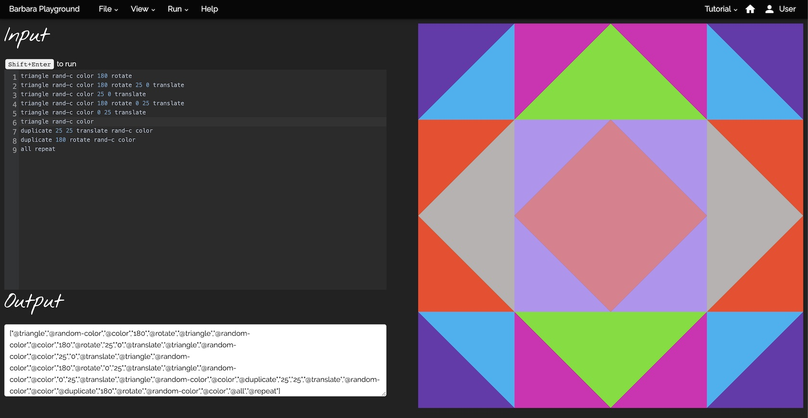
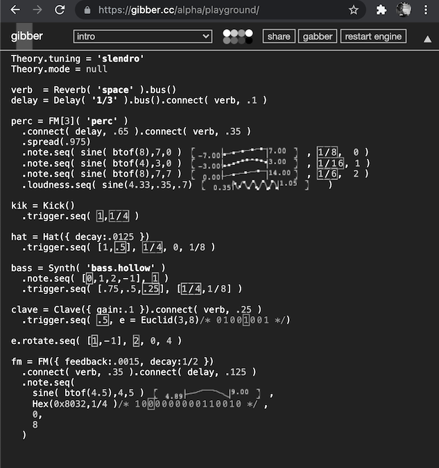
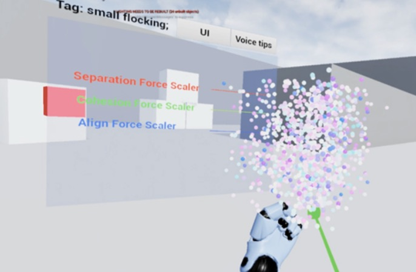
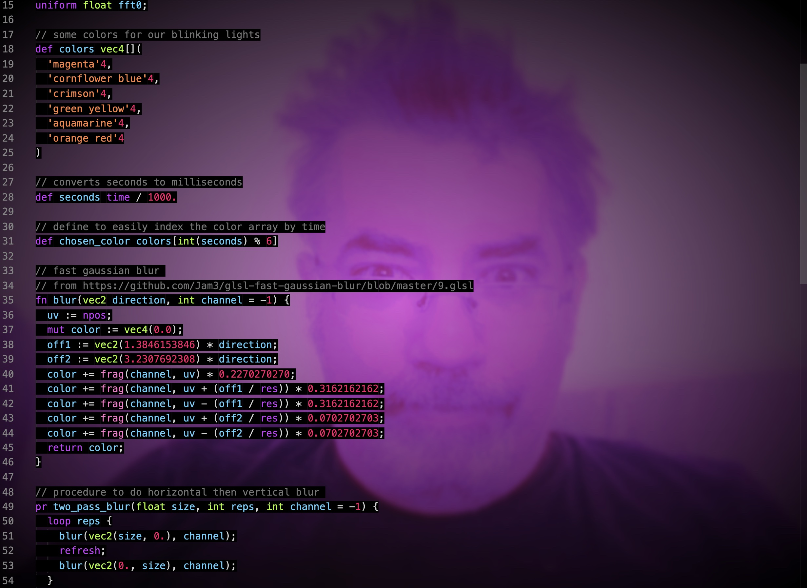
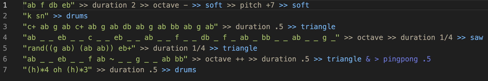
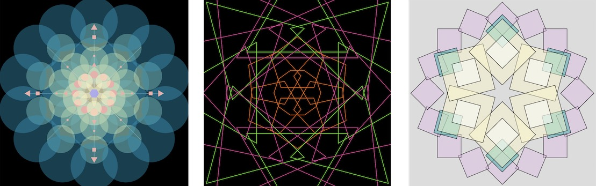
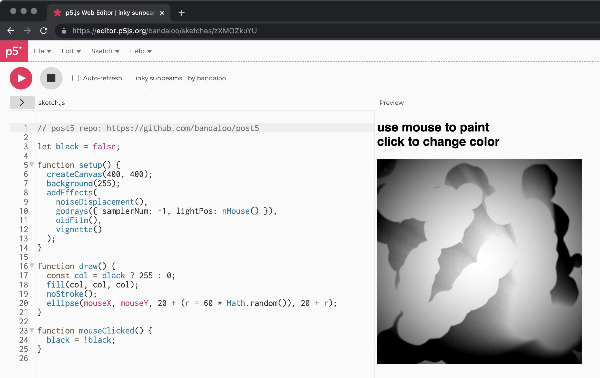
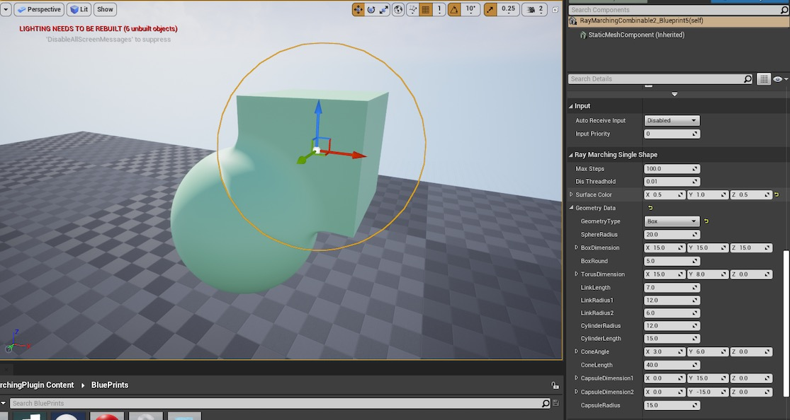

Our research artifacts are categorized here as either languages, libraries, or programming environments, but some span all three categories.
Barbara is a system for creating bespoke programming languages generating geometric patterns. Inspired by algorithmic quilting patterns, Barbara helps users construct languages that mimic real-world quilting procedures which can be used for both live coding performance or digital quilt recreation. Users create languages and patterns in Barbara’s online coding environment with the Parsing Expression Grammar language formalism; the resulting patterns can be freely shared, remixed, and combined into new quilts.
gibber is a browser-based live coding environment, featuring custom music and graphics libraries, features for collaborative networked performance, and a research focus on annotating source code with dynamic visualizations provide meaningful visual feedback to on algorithmic processes to performers and audiences.
Meng is a live coding environment authored in Unreal Engine 4 that enables users to create and control agents in a virtual world. While many VR programming environments focus on using "virtual keyboards" for programming, Meng eschews this in favor of a language that combines spoken command with gestures, along with a graphic user interface providing instructions and additional controls. The graphics in Meng are a relatively unique combination of traditional mesh geometries combined with ray marched signed distance functions, enabling realtime constructive solid geometry, morphing, and blending. The UE4 ray marching library, a UE4 GPGPU flocking library, and the UE4 speech recognition library used in this project were all authored by members of the REPL lab who worked on Meng.
(Tinsl is not a shading language) is a shader meta-programming language for compiling GLSL shaders. The language enables developers to easily create complex multi-pass rendering pipelines without needing to write WebGL code, and even provides for simple GPGPU programming.
Phad is a live coding environment built for web browsers. Phad strives for minimal syntax, with the purpose of achieving both readability and simplicity targeted to users with no programming or music experience. It is built around the modification of notes and instruments, and the combination of both.
p5.Polar is a JavaScript library that extends p5.js standard drawing functions with versions using polar coordinates. The library converts polar coordinate to cartesian coordinate, and abstracts the mathematics required for making many types of geometric patterns.
p5.post is a library for p5.js that enables you to apply interesting post-processing effects on your sketches using the power of WebGL2.
Marching.js is a JavaScript shader compiler specifically focused on ray marching via signed distance functions. The goals of this project are:
This plugin provides performs ray marching on a provided mesh in Unreal, which has the advantage of using Unreal's graphics engine to determine culling / z-testing while still enabling forms that would difficult if not impossibe with traditional mesh-based rendering. The plugin also includes volumetric fog with shadows and ambient occlusion, and basic constructive solid geometry boolean operations (union, difference, intersection, etc.)
genish.js is a loose JavaScript port of the gen~ language for Max/MSP. It enables developers to compile efficient, high-level synthesis graphs using a set of low-level building blocks.